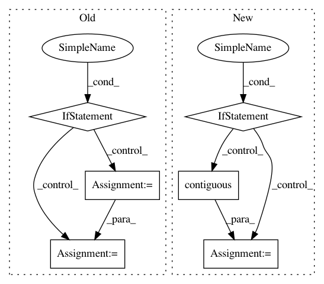

979b8c9efa551e8c948a4aca145367a2d87ac8d6,gpytorch/distributions/multitask_multivariate_normal.py,MultitaskMultivariateNormal,rsample,#MultitaskMultivariateNormal#Any#Any#,95
Before Change
def rsample(self, sample_shape=torch.Size(), base_samples=None):
if base_samples is not None:
// Make sure that the base samples agree with the distribution
if tuple(self.mean.size()) != tuple(self.mean.size()[-self.mean.dim() :]):
raise RuntimeError(
"The size of base_samples (minus sample shape dimensions) should agree with the size "
"of self.mean. Expected ...{} but got {}".format(self.loc.size(), base_samples.size())
)
sample_shape = torch.Size(tuple(base_samples.size(i) for i in range(base_samples.dim() - self.mean.dim())))
base_samples = base_samples.view(*sample_shape, *self.loc.shape)
samples = super(MultitaskMultivariateNormal, self).rsample(sample_shape=sample_shape, base_samples=base_samples)
samples = samples.view(sample_shape + self._output_shape)
After Change
base_samples = base_samples.view(*sample_shape, *self.loc.shape)
samples = super().rsample(sample_shape=sample_shape, base_samples=base_samples)
if not self._interleaved:
samples = samples.transpose(-1, -2).contiguous()
return samples.view(sample_shape + self._output_shape)
@property
def variance(self):
In pattern: SUPERPATTERN
Frequency: 3
Non-data size: 6
Instances
Project Name: cornellius-gp/gpytorch
Commit Name: 979b8c9efa551e8c948a4aca145367a2d87ac8d6
Time: 2019-02-26
Author: balandat@fb.com
File Name: gpytorch/distributions/multitask_multivariate_normal.py
Class Name: MultitaskMultivariateNormal
Method Name: rsample
Project Name: maciejkula/spotlight
Commit Name: bc51dbc0c56f68ed30857755026633f78eef1ae8
Time: 2017-08-20
Author: maciej.kula@gmail.com
File Name: spotlight/layers.py
Class Name: BloomEmbedding
Method Name: forward
Project Name: asappresearch/sru
Commit Name: faf3aa876462323f2fa721ebd633752d6489808f
Time: 2020-09-18
Author: taolei@csail.mit.edu
File Name: sru/modules.py
Class Name: SRU
Method Name: forward